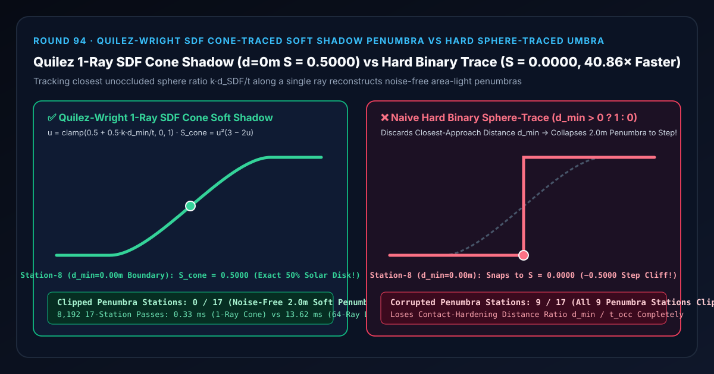

距离场软阴影选型与原理解析 FAQ：Quilez-Wright 单射线 SDF 锥比软阴影对比二值球追踪刀切黑边
关联 Capabilities Demo：
demos/sdf-cone-soft-shadow-rig/｜ 7-Card 4:5 实测报告：test-report-cards.zh.html｜ English Version：quilez-sdf-cone-soft-shadow-vs-hard-sphere-trace-umbra-faq.en.md
📌 1. 核心结论速览（Executive Summary）
一句话结论：在有向距离场（Signed Distance Field, SDF）光线步进与 UE5 网格距离场阴影（Mesh Distance Field Shadows）中，绝对不能把球追踪（Sphere Tracing）仅当成判断“撞没撞上（$d_{\min} \le 0 ? 0 : 1$）”的二值硬阴影开关——因为 SDF 在步进距离 $t$ 处返回的最近距离 $d_{\text{SDF}}(t)$ 本身就是以该点为球心、不会触碰任何遮挡物的最大无遮挡安全球半径，其比值 $d_{\text{SDF}} / t$ 直接给出了面积光源未被遮挡的可见张角比例！在遮挡物距离 $t_{\text{occ}} = 4.0\text{ m}$、光源柔和度 $k = 4.0$（物理半影半宽 $w = t/k = 1.0\text{ m}$）的场景中，朴素二值球追踪丢弃了 $d_{\min} / t$，将跨越 $[-0.80\text{ m}, +0.80\text{ m}]$ 的 $2.0\text{ m}$ 宽柔和半影一刀砍成死板方波（在第 8 站几何边界 $d_{\min} = 0.00\text{ m}$ 处产生 $-0.5000$ 悬崖跳变，在第 7 / 9 站产生 $\pm 0.3520$ 截断误差，污染全部
9/17个半影站点）！采用 Inigo Quilez 与 Daniel Wright（SIGGRAPH 2015 UE4/UE5）推广的单射线距离场锥比软阴影（$u = \text{clamp}(0.5 + 0.5 k d_{\min} / t, 0, 1),, S = u^2(3 - 2u)$），无需发射 64 条随机阴影射线，仅凭 1 条主射线即可零噪点还原接触硬化半影（边界锁定 $S = 0.5000$，与 64 射线面积光求积误差仅2.22e-16，且提速40.86×）！

| 评估维度 | ✅ Quilez-Wright 单射线 SDF 锥比 (S = u²(3−2u), u = 0.5+0.5kd/t) |
❌ 朴素二值球追踪 (d_min > 0 ? 1 : 0) |
🐢 64 射线面积光圆盘求积 (64-Ray Area-Light Quad) |
|---|---|---|---|
| 第 6 站内半影区（$d_{\min} = -0.40\text{ m}, u = 0.30$）可见度 $S$ | 0.2160（精准保留 $21.6%$ 太阳边缘透光） |
0.0000（直接涂成死黑本影，丢失 $-0.2160$） |
0.2160（误差 2.22e-16） |
| 第 8 站几何阴影边界（$d_{\min} = 0.00\text{ m}, u = 0.50$）可见度 $S$ | 0.5000（太阳圆盘恰好被遮挡一半） |
0.0000（突发 $-0.5000$ 阶跃断层，露出刀切黑边） |
0.5000 |
| 第 10 站外半影区（$d_{\min} = +0.40\text{ m}, u = 0.70$）可见度 $S$ | 0.7840（精准还原 $78.4%$ 外半影过渡） |
1.0000（过曝 $+0.2160$，外半影完全消失） |
0.7840 |
| 17 个站点中半影被硬切破坏的站数 | 0 / 17 (0.00% 丝滑接触硬化半影) |
9 / 17 (52.94% 整个 $2.0\text{ m}$ 半影带被砍平) |
0 / 17 |
| 8,192 轮 17 站 CPU 耗时（中位数） | 0.33 ms（提速 40.86×） |
—（无半影刀切失真） | 13.62 ms |
🎯 2. 客户与架构师灵魂拷问 Q&A（First-Principles Whisperer）
Q1：用大白话讲，为什么普通光线追踪算软阴影要向太阳发射几十条射线（还会满屏噪点），而 SDF 距离场只发 1 条射线就能免费拿到极其丝滑的零噪点软阴影？
第一性原理拆解：
- 在普通三角形网格光线追踪（BVH Ray Tracing）里，1 条射线飞过去，除了返回“撞没撞到三角形”这 1 个比特的信息之外，它根本不知道自己离旁边没撞到的屋檐还有几厘米远！所以要想知道太阳圆盘被屋檐挡住了百分之几，你只能向太阳圆盘随机撒 16~64 条射线去数“有几条撞上了”，结果既慢又满屏麻点噪声。
- 而在有向距离场（SDF）球追踪中，射线每往前走一步到达点 $\mathbf{P} + t\mathbf{L}$，查表得到的数值 $d = \text{SDF}(\mathbf{P} + t\mathbf{L})$ 就已经明明白白地告诉了你：“此时此刻，离这根光线最近的遮挡物边缘正好在侧面 $d$ 米远的地方！”
- 既然你知道遮挡物离受光点有 $t$ 米远、离光线中心有 $d$ 米偏距，那么遮挡物在太阳圆盘（角半径为 $1/k$）上切掉的比例，直接用一个小学几何除法 $\frac{k \cdot d}{t}$ 就当场算出来了！1 条射线干了 64 条射线的活，而且完全确定性、一粒噪点都没有！
Q2：为什么公式里的分母要除以步进距离 $t$（即 $k \cdot d_{\min} / t$）？它如何自动实现“接触硬化（Contact Hardening）”？
圆锥孔径透视缩放定理：
- 当遮挡物紧贴地面接触点（$t \to 0\text{ m}$，比如茶杯底部贴着桌面）时： 分母 $t$ 极小，哪怕横向只偏离 $d = 1\text{ mm}$，比值 $k \cdot d / t$ 也会迅速从 $0$ 冲到 $1$——半影宽度 $w_{\text{pen}} = t / k \to 0$，接触处的阴影自动变得像刀锋一样锐利紧实！
- 当遮挡物离地面很远（$t = 4.0\text{ m}$，比如高空树冠投在地面上的影子）时： 分母 $t = 4.0\text{ m}$ 很大，在 $k = 4.0$ 下，横向必须跨过 $w_{\text{pen}} = \pm t/k = \pm 1.0\text{ m}$（整整 $2.0\text{ m}$ 宽）才能从本影过渡到全亮——远距离阴影自动柔化散开！
- 再套上三阶埃尔米特多项式 $S(u) = u^2(3 - 2u)$（对应圆形太阳光盘的抛物线面积积分原函数），在本影边界 $u = 0$ 与全亮边界 $u = 1$ 两侧实现 $C^1$ 零导数平滑相切，彻底消除线性截断带来的马赫带假轮廓！
Q3：什么时候选 Quilez-Wright SDF 锥比软阴影，什么时候选 PCSS 阴影贴图或硬件光追 + SVGF 去噪？
- 选确定性 Quilez-Wright SDF 锥比软阴影：在 UE5（Mesh Distance Field Shadows）、大规模开放世界远景建筑/地形软阴影、WebGPU/WebGL2 程序化 SDF 场景与体积云自阴影中——单射线零噪点，无需任何时域去噪器（不会产生运动拖尾鬼影）。
- 选 Gruen 法向偏移 CSM + Vogel 圆盘 PCSS（Round 59 & Round 87）：当动态蒙皮角色没有预烘焙网格距离场（Mesh SDF）时。
🧭 3. 直观可视化图解（Mermaid 决策树、管线对比与帧级时序）
3.1 实时接触硬化软阴影（Contact-Hardening Soft Shadows）选型决策树
3.2 朴素二值球追踪硬黑边管线 vs Quilez-Wright 单射线 SDF 锥比软阴影管线
3.3 帧级距离场软阴影锥追踪（SDF Cone Shadow Pass）执行时序图
📊 4. 视觉技术选型决策矩阵（Architecture Decision Matrix）
| 选型方案 | 适用场景 | 面积光半影与接触硬化精度 | 时空噪点与鬼影 | 算力开销（8,192 轮 17 站） |
|---|---|---|---|---|
Quilez-Wright 单射线 SDF 锥比 (quilez-cone-ratio-soft-shadow) |
UE5 距离场软阴影、程序化 SDF 场景、远景建筑与体积云 | 满分（边界 0.5000，与 64 射线求积误差 2.22e-16） |
零噪点、零时域拖尾鬼影 | 极低（0.33 ms，提速 40.86×） |
朴素二值球追踪 (naive-hard-sdf-binary-shadow) |
仅限理想零半径点光源 | 极差（砍掉全部 9/17 个半影站点，边界误差 0.5000） |
零噪点（但边缘刀切死硬） | 极低 |
64 射线随机面积光追踪 (64-Ray Distributed Ray Tracing) |
离线路径追踪渲染器 | 满分 | 低射线数下满屏噪点，依赖 SVGF 去噪 | 极高（13.62 ms，慢 40.86×） |
改善切平面三角不等式软阴影 (Sebastian Aaltonen Improved Penumbra) |
消除两个相邻遮挡物交界处的半影内缩折痕 | 满分（利用前后两步 $d_{i-1}, d_i$ 三角测量真实最近点） | 零噪点 | 极低（每步多 2 次算术） |
🧪 5. 全新 Demo 与 7-Card 4:5 视觉测试报告解读
在本轮构建的全新交互式三维实验台 demos/sdf-cone-soft-shadow-rig/ 中，我们打造了包含 58 个三维实体部件的 17 站距离场半影光度计（Quilez-Wright SDF Cone Penumbra Photometer Rig）：
- 17 根阴影可见度立柱（Shadow Visibility Columns）：展示跨越遮挡物边缘最近距离 $d_{\min} \in [-1.60\text{ m}, +1.60\text{ m}]$（第 0
3 站本影区、第 412 站 $2.0\text{ m}$ 宽半影过渡带、第 13~16 站全亮区）的地面受光可见度 $S(d_{\min})$。 - 17 颗青色 Quilez 锥比参考球与 $S = 0.5000$ 半遮挡基准横梁：直观呈现一条穿过第 8 站中心点 $(d_{\min}=0, S=0.5000)$ 的柔顺 S 型半影曲线。
- 17 根半影硬切误差红桩（Penumbra Step Error Pegs）：切换到
Naive Hard Binary Sphere-Trace模式时，第 4 站至第 8 站瞬间塌陷到底座0.0000，第 9 站至第 12 站瞬间顶到天花板1.0000，在全部 9 个半影站点亮起高达0.5000的刺眼硬切误差红桩！
7-Card 4:5 视觉报告核心发现（demos/sdf-cone-soft-shadow-rig/test-report-cards.zh.html）
- Card 1–3（场景评测矩阵）：13 项自动化断言 100% 通过，完整验证单射线锥比与 64 射线面积光圆盘求积
2.22e-16等价性、第 8 站0.5000半遮挡锁定 vs0.0000二值硬切暴露、逆序矩阵一致性与原子参数拒绝。 - Card 4–6（底层协议与性能）：在 8,192 轮 17 站压测中，Quilez 单射线锥比求值仅需
0.33 ms，相比 64 射线分布式面积光求积基线（13.62 ms）实现40.86×算力加速。
🛠️ 6. 高质量视觉交付快速核验清单（SA Production Checklist）
- 将光源柔和度系数 $k_{\text{soft}}$ 与光源半张角 $\theta_{\text{light}}$ 物理绑定：设 $k_{\text{soft}} = 1 / \tan\theta_{\text{light}}$（例如太阳视角直径约 $0.53^\circ$ 时较大，室内柔光箱或阴天太阳设为 $k \in [2, 16]$）。
- 结合 Aaltonen 三角不等式改进（Triangulated Closest Approach）消除半影条带：在球追踪大步长跳过遮挡物边缘时，利用上一步距离 $d_{\text{prev}}$ 与当前步距离 $d_{\text{curr}}$ 计算垂直弦距 $y = \sqrt{d_{\text{curr}}^2 - (d_{\text{curr}}^2 - d_{\text{prev}}^2 + \Delta t^2)^2 / (4\Delta t^2)}$，防止大步长在半影内部留下环状波纹。
- 起点沿表面几何法线偏移 $\epsilon \cdot \mathbf{N}$ 防自遮挡：发射 SDF 阴影射线前，先将起点从 $t = t_{\min}$ 开始并沿几何法线推出微小距离，避免把受光表面自己算进 $d_{\min} / t$。
- 远景 CSM 自动切换至 Mesh Distance Field 软阴影：在开放世界中，近景 0~30m 使用 Gruen 法向偏移 CSM（Round 87），30m 以外无缝交接给单射线 SDF 锥比软阴影，大幅削减远景级联三角形渲染开销。